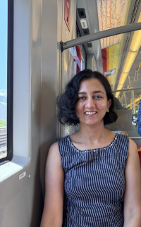
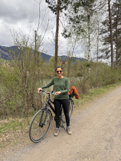
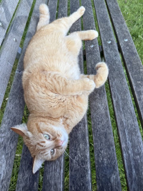

<div id="main" class="tab-content">
  <section class="main-section">
    <h2>Aarhus University, Denmark & TU Wien, Austria</h2>
    <div class="about-layout">
      <div class="main-item">
        <p class="main-details">
          I am currently a Postdoctoral Researcher working with <a href="https://cs.au.dk/~elm/" target="_blank" rel="noopener"> Niklas Elmqvist</a> at the <a href="https://cs.au.dk/" target="_blank" rel="noopener"> Department of Computer Science</a> at Aarhus University. I am part of the <a href="https://anytime-anywhere-analytics.vercel.app/" target="_blank" rel="noopener"> Center for Anytime, Anywhere, Analytics (CA3)</a>, where I mainly focus on human-centered AI and data visualization research in manufacturing domain. 
          In parallel, I am also employed as a PostDoc (part-time) in the <a href="https://www.cg.tuwien.ac.at/" target="_blank" rel="noopener"> Research Unit of Computer Graphics</a> at TU Wien, where I work with <a href="https://www.cg.tuwien.ac.at/staff/EduardGr%C3%B6ller" target="_blank" rel="noopener"> Eduard Gröller</a>. Prior to this, I was a PhD student at the <a href="https://jku-vds-lab.at/" target="_blank" rel="noopener"> Visual Data Science Lab</a> at the Johannes Kepler University, Linz, Austria under the supervision of <a href="marc-streit.com" target="_blank" rel="noopener"> Marc Streit</a>.
        </p>

        <p class="main-details">
            My research interests include data visualization, storytelling with data, and human-centered AI. I work closely with domain experts to understand how they use and interact with data through visualization dashboards to make decisions. My work aims to improve their understanding of these dashboards through tools that I build together with my collaborators. Recently, I have started leveraging AI capabilities to enhance user understanding of visualization dashboards. I am curious about how AI will shape the future of data visualization and dashboards and reduce the knowledge gap between dashboard authors and users.        </p>
        <p class="main-details">
          My work requires me to travel often between Denmark and Austria. When I am not traveling, I enjoy biking and petting cats wherever I go.
        </p>
      </div>
      <div class="about-images">
        
        
        
      </div>
    </div>
  </section>
</div>
